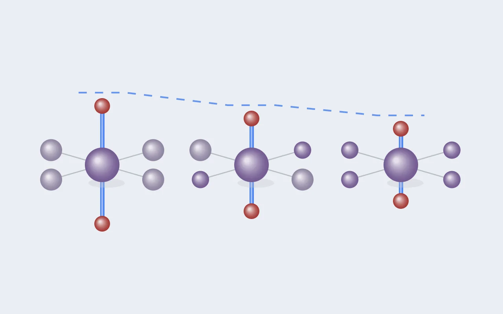

DFT 실습 [8] — 이웃을 세었더니 얀-텔러가 계단을 그렸다
실습 [7]은 수수께끼 하나를 남겼습니다. Na를 뺀 구조의 Mn³⁺는 분명 온전한 Mn³⁺인데, 얀-텔러 왜곡은 원래의 절반쯤으로 약해져 있었죠. "옆에 쪼그라든 Mn⁴⁺가 있어서 마음껏 늘어나지 못한다"는 가설을 세우고 셀을 키워 배열을 바꿔봤습니다. 첫 실험은 가설을 확인해주지 않았습니다. 대신 제 실험 설계의 구멍을 보여줬고, 그 구멍을 메운 두 번째 실험에서 왜곡이 이웃의 수를 따라 계단을 그렸습니다.

1. 슈퍼셀 두 배열: 검산은 완벽했다
실습 [7]에서 제출한 두 계산은 셀을 b축으로 두 배 키운 Na₂Mn₄O₈(Na₀.₅MnO₂)의 서로 다른 두 배열입니다. c1은 Mn⁴⁺가 b축을 따라 줄지어 서는 줄무늬 배열로 8원자 셀 계산과 같은 배열이고, c2는 b축을 따라 Mn³⁺와 Mn⁴⁺가 번갈아 놓이는 배열입니다. 둘 다 2차 이완까지 마쳤습니다.
| 1차 (eV) | 2차 (eV) | Pulay 보정 | |
|---|---|---|---|
| c1 (줄무늬) | −94.158682 | −94.152033 | +6.6 meV |
| c2 (번갈아) | −94.177320 | −94.175587 | +1.7 meV |
| 참고: 8원자 셀 × 2 | −94.159310 | −94.152426 | +6.9 meV |
c1의 2차 값은 8원자 결과의 두 배와 0.4 meV 차이로, 16원자 슈퍼셀이 작은 셀을 거의 정확히 재현했습니다. KPOINTS를 4×4×4로 두면 b축이 두 배가 된 만큼 옛 셀의 4×8×4와 같은 샘플링이 된다는 설계가 먹힌 겁니다. 그리고 두 배열의 Pulay 보정이 달라서(+6.6과 +1.7 meV) 1차 값보다 차이가 오히려 벌어졌습니다. 결론은 c2가 셀당 23.6 meV 더 안정합니다. 1차 이완 값으로 결론을 냈다면 차이를 20% 넘게 작게 읽었을 겁니다.
초기 추측이 뒤집히다
c1의 MAGMOM은 "Na 빈자리와 더 많이 이웃한 Mn이 4+가 된다"는 규칙으로 정했습니다. 결과는 정반대였습니다. 규칙이 4+ 후보로 찍은 두 Mn이 3+(3.856 μB)가 됐고, 나머지 둘이 4+(3.172 μB)가 됐어요. 계산이 이완 중에 전하 배치를 스스로 뒤집은 겁니다. 초기값은 씨앗이지 판결이 아니라는 걸 또 봤고, 방법론적으로는 빈자리 이웃 수로 Mn⁴⁺ 자리를 정하는 규칙은 믿을 만하지 않다는 교훈입니다. 전하 배치도 여러 개 시도해야 할 변수라는 뜻이고, §3에서 바로 그렇게 했습니다.
2. 얀-텔러는 되살아나지 않았다, 그리고 설계의 구멍
이번 실험의 진짜 질문은 결합 길이였습니다. c2에서 Mn³⁺의 이웃이 바뀌면 얀-텔러가 되살아날까?
c1 Mn³⁺: 1.986 ×4 / 2.239 ×2 긴/짧은 비 1.13
c2 Mn³⁺: 1.947 ×2, 1.981 ×2 / 2.243 ×2 긴/짧은 비 1.14거의 안 변했습니다. 긴 결합은 2.239와 2.243으로 사실상 같고, c2에서는 짧은 결합 넷이 둘씩 갈라진 정도입니다. 이유를 따지다가 구멍을 찾았습니다. 삼각 격자에서 각 Mn은 이웃 Mn이 여섯 개인데, 세어보면 c1에서도 c2에서도 모든 Mn³⁺가 Mn⁴⁺ 이웃 4개, Mn³⁺ 이웃 2개를 갖습니다. 두 배열은 이웃의 개수는 같고 공간 배치만 다른 거였어요. "c2에서 Mn³⁺의 이웃 구성이 달라진다"는 제 설명은 틀렸고, 계산 전에 이웃을 세어봤어야 했습니다.
그래서 이 결과를 제대로 읽으면 이렇습니다. Mn⁴⁺ 이웃의 수가 같으면 배치를 바꿔도 얀-텔러는 거의 같다. 가설을 기각한 게 아니라, "이웃이 어떻게 놓였나"보다 "Mn⁴⁺가 몇 개인가"가 왜곡을 좌우한다는 더 좁고 시험 가능한 가설로 다듬어준 겁니다.
3. 두 번째 실험: 이번엔 세고 들어간다
Mn⁴⁺ 이웃의 수를 바꾸려면 Mn⁴⁺의 비율을 바꾸면 됩니다. 같은 16원자 슈퍼셀에서 Na를 하나만 빼면 Na₃Mn₄O₈(x = 0.75)이 되고, Mn 넷 중 하나만 4+가 됩니다. 이번엔 계산을 제출하기 전에 스크립트가 각 Mn³⁺의 Mn⁴⁺ 이웃 수를 먼저 세게 했습니다. 그리고 세어보니 제가 또 틀렸더군요. "Mn⁴⁺ 이웃이 0개인 자리와 2개인 자리가 섞여 생긴다"고 예상했는데, 이 셀에서는 모든 Mn³⁺가 Mn⁴⁺ 이웃을 정확히 2개씩 갖습니다. 이번엔 제출 전에 잡았습니다.
그래도 실험은 여전히 가설을 시험합니다. 조성을 가로지르면 이웃 수가 0(x = 1), 2(x = 0.75), 4(x = 0.5)로 계단을 이루니까요. 이웃 수가 왜곡을 좌우한다면 x = 0.75의 비는 1.24와 1.13 사이에 떨어져야 합니다.
§1의 교훈도 반영했습니다. 어느 Mn이 4+가 될지 추측하지 않고 네 가지를 전부 만든 뒤 대칭으로 중복을 뺐습니다. 요령은 4+ 후보 자리에 표식 원소(Fe)를 잠깐 심어 StructureMatcher로 묶는 것입니다.
for m in mn:
t = sc.copy(); t.replace(m, "Fe"); marked.append(t) # 4+ 자리를 Fe로 표시
groups = StructureMatcher().group_structures(marked)
# Mn4+ 자리 후보 4개 → 대칭적으로 다른 전하 배치 3개 (q1, q2, q3)세 계산을 돌렸더니 놀라운 일이 있었습니다. 최종 에너지가 셋 다 −97.861031 eV로 소수점 여섯째 자리까지 같았고, 이온별 모멘트도 완전히 같았습니다. 초기에 4+를 서로 다른 세 자리에 뒀는데, 셋 다 같은 자리가 4+인 상태로 끝났어요. 두 계산은 이완 중에 전하가 스스로 옮겨가 나머지 하나에 합류한 겁니다. 하나만 돌렸다면 "이게 바닥인가?"를 알 수 없었을 텐데, 세 출발점이 한 곳에 모였으니 이 셀에서 x = 0.75의 전하 배치는 하나뿐이라고 꽤 자신 있게 말할 수 있습니다.
4. 결과: 얀-텔러의 계단
| Mn⁴⁺ 이웃 수 | 조성 | Mn³⁺ 긴 결합 (Å) | 긴/짧은 비 | 왜곡 지수 |
|---|---|---|---|---|
| 0 | x = 1 | 2.436 | 1.24 | 1.1×10⁻² |
| 2 | x = 0.75 | 2.32 | 1.17~1.18 | 6.0~6.6×10⁻³ |
| 4 | x = 0.5 | 2.24 | 1.13~1.14 | 3.3~4.1×10⁻³ |
정확히 예측한 사이에 떨어졌습니다. 긴 결합이 2.436 → 2.32 → 2.24로, Mn⁴⁺ 이웃이 두 개 늘 때마다 계단처럼 짧아집니다. 게다가 x = 0.75 안에는 Mn⁴⁺ 이웃 2개를 서로 다른 방향에 둔 Mn³⁺가 두 종류 있는데, 둘의 비는 1.17과 1.18로 거의 같습니다. x = 0.5의 c1과 c2에서 본 것과 똑같이, 이웃의 배치는 거의 영향이 없고 개수가 왜곡을 좌우한다는 그림이 세 조성에 걸쳐 일관되게 나왔습니다.
특징으로서의 견고성도 한 번 더 확인됐습니다. 모든 계산에서 Mn³⁺의 왜곡 지수는 10⁻³~10⁻²대, Mn⁴⁺는 10⁻⁴ 이하로 한 자릿수 이상 벌어져 있습니다. 왜곡 지수는 산화 상태를 구분하는 동시에, 이웃 환경에 따라 연속적으로 움직이는 특징입니다.
연구와의 연결
고엔트로피 층상산화물에서 국소 구조를 설명하려면 "그 자리가 무슨 이온인가"만으로는 부족하고 "이웃에 무엇이 몇 개 있나"가 필요하다는 걸, 가장 단순한 Mn 한 원소 계에서 정량적으로 보인 겁니다. 이웃 조성을 세는 특징은 단거리 질서(SRO) 파라미터와 같은 계열이라, 본 연구의 특징 설계로 곧장 이어집니다.
단서는 하나입니다. 이웃 수가 바뀔 때 Na 함량도 함께 바뀌었으니(x = 1, 0.75, 0.5), 지금 데이터로는 이웃 효과와 Na 함량 효과를 완전히 분리하지 못합니다. 그걸 가르려면 같은 조성 안에서 이웃 수가 다른 Mn³⁺가 공존하는 더 큰 셀이 필요합니다.
5. 덤으로 찾은 것: 전압이 거꾸로 내려갔다
세 조성의 에너지가 다 모였으니 전압을 구간별로 나눠 계산할 수 있게 됐습니다. 원래 구조는 바닥인 AFM, 나머지는 FM, Na 금속은 원자당 −1.308221 eV입니다.
| 구간 | 전압 |
|---|---|
| x = 1 → 0.75 | 2.446 V |
| x = 0.75 → 0.5 | 2.377 V |
| x = 1 → 0.5 평균 | 2.411 V |
평균 2.411 V는 실습 [7]의 2.42 V에서 0.01 V 내려간 값입니다. x = 0.5의 바닥 배열이 c2로 바뀐 만큼이고, 작은 셀이 강제한 배열 가정이 전압에 주는 영향이 이 정도라는 뜻입니다. 실습 [6]이 남긴 세 가정 중 두 번째(셀 크기)에 대한 첫 측정입니다.
그런데 표를 보면 이상합니다. 정상적인 충전 곡선은 Na를 뺄수록 전압이 올라가야 하는데, 뒤 구간이 앞 구간보다 낮습니다. 이건 x = 0.75 상태의 에너지가 양 끝(x = 1과 0.5)을 섞은 것보다 높다는 뜻입니다.
x = 0.75의 에너지는 두 끝점을 잇는 직선보다 셀당 34 meV 위에 있습니다. 이런 중간 조성은 스스로 존재하지 못하고 두 상(x = 1과 x = 0.5)으로 갈라지는데, 이게 볼록 껍질(convex hull)의 개념이고, 전압 곡선에서는 2.41 V의 평탄 구간(plateau)으로 나타납니다. 연구 주제의 목표 물성 중 하나인 E_hull을 처음으로 직접 계산한 셈입니다.
하지만 결론으로 적을 수는 없습니다. 원래 구조만 AFM이고 x = 0.75는 FM으로만 계산했어요. 자기 배열을 FM으로 통일해서 다시 재면 직선 위로 7 meV밖에 뜨지 않는데, 실습 [7]에서 본 자기 배열 에너지(27, 72 meV)보다 작은 차이입니다. x = 0.75의 반대 스핀 배열을 확인하기 전까지 "x = 0.75는 불안정하다"는 가설입니다.
이날 배운 것들
- 실험을 설계하면 변수부터 센다. 두 배열이 이웃 수가 같다는 걸 계산 전에 셌다면 첫 실험을 다르게 짰을 것이다. 두 번째엔 세고 들어가서 제출 전에 제 예측의 오류를 잡았다.
- 가설이 틀린 게 아니라 좁혀질 때가 있다. "이웃이 왜곡을 바꾼다"는 "Mn⁴⁺ 이웃의 수가 왜곡을 바꾼다"가 되어 시험을 통과했다.
- 전하 배치는 추측하지 말고 열거한다. 규칙은 한 번 뒤집혔고, 세 출발점을 모두 돌려서야 바닥이 하나뿐임을 알았다. 표식 원소로 대칭 중복을 빼는 요령은 고엔트로피에서도 그대로 쓴다.
- 1차 이완 값으로 에너지 차이를 결론 내지 않는다. 배열마다 Pulay 보정이 달라, 차이가 18.6에서 23.6 meV로 바뀌었다.
- 전압이 거꾸로 가면 볼록 껍질을 의심한다. 중간 조성이 두 끝점을 잇는 선보다 위에 있으면 그 조성은 존재하지 않고 평탄 구간이 생긴다. 단, 그 판정은 에너지 스케일이 비슷한 다른 가정(자기 배열)에 흔들릴 수 있다.
- PBS의 E는 에러가 아니라 Exiting. 끝난 잡이 뒷정리를 하는 중이다.
다음. 오늘 가설 수준에 오른 두 가지를 하나씩 굳힙니다. 하나는 "얀-텔러는 Mn⁴⁺ 이웃 수를 따른다"를 Na 함량 효과와 분리하는 것으로, 같은 조성 안에서 이웃 수가 다른 Mn³⁺가 공존하는 더 큰 셀이 필요합니다. 다른 하나는 x = 0.75의 반대 스핀 배열을 계산해 "x = 0.75는 볼록 껍질 위에 있다"가 자기 배열 가정에도 살아남는지 확인하는 것입니다.

Seok
연구하면서 개발합니다. 배터리 재료를 원자 단위에서 계산하는 법을 바닥부터 배우는 중입니다. → 글 더 보기